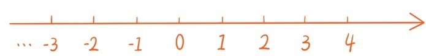
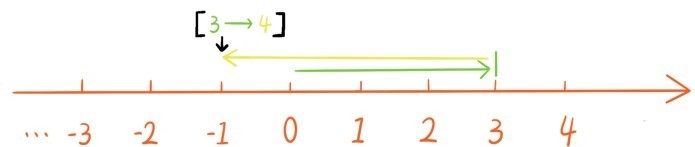

——引入负数
在第三节中讲过，减法是不能随便做的。9-10该等于多少呢？一个只有9个球的筐中，无论如何也取不出10个球的。现实生活中也常常碰到类似的问题。一个人如果手头只有9万元钱，却还欠别人6万元钱，那他的资产就应该计为9-6=3万元。但如果他欠别人的钱是10万元，这时他的资产就应该记为9-10=？
之前，为了让除法总可以做下去，比如为了将2块巧克力平均分成5份，我们直接地引入分数 ，使得
现在，为了让9-10能有结果，我们也直接粗暴地引入新的数[9→10]，希望有9-10=[9→10]。[9→10]这个数表示你手头只有9万元钱，却还欠别人10万元钱时，你的资产数（单位为万元），还表示在9个球的筐中，取走10个球后剩下的球数。
这里有人可能会抗议：“只有9个球的筐中，无论如何是取不出10个球啊！”在现实生活中，这当然是做不到的，但是在数学世界中，这是完全可以做到的，因为数学世界充满魔力！
我们把[9→10]中箭头左边的数9称为[9→10]的前部，箭头指向的数10称为[9→10]的后部。如果把9与10换成其他分数，就可以1得到一大堆的新数，比如[0→2]，…
之前说过，分数常常会伪装成不同的形式，比如
为此专门给出了一个识别法则：
一个分数的分母分子同时乘以或除以同一个不为零的自然数，分数本身并没有改变。
这一节介绍的这种新数也非常喜欢伪装。上面那个手头只有9万元钱，却还欠别人10万元钱的人，如果他还了3万元钱，那么手头还剩下9-3=6万元钱，欠别人10-3=7万元钱，这时他的个人资产应该是[6→7]万元。如果他不但不还钱，还继续向别人借了6万元，那他手头的钱就变成9+6=15万元钱，欠别人10+6=16万元钱，这时他的个人资产应该是[15→16]万元。
但是，不管你借多少钱，或者还了多少钱，个人资产是不会改变的，除非你赖账。所以应该有这样的等式
由此可以引出一个识别这种新数伪装的法则：
一个数的前部后部同时加上或减去同一个分数，数本身并没有改变。
请注意，这个识别法则和上面的分数识别法则是非常非常类似的！！既然现在引入了新的数，那之前的分数该怎么处置呢？之前自然数融入到分数中，变成特殊的分数是这样的
现在，分数也可以融入到新数中
最后这个等式是说如果你手头有9万元钱，没有欠任何人钱，那你的资产自然就是9万元。
为了比较这种新数的大小，先对它们做简化，让它的前部和后部不断减去同样的数，直到不能再减为止。这时前部和后部至少有一个为0，所以所有的这种新数可以分成3类：
1．前部为0，后部是大于0的分数，称这种数为负数；
2．前部是大于0的分数，后部为0，这就是大于0的分数；
3．前部后部都是0，就是分数0。
为了书写便捷，我们引入负号“-”表示负数，比如[0→3]记作-3，记作- 。这种负的整数和分数也是有理数。大于0的分数称为正有理数，将目前引入的这种负数称为负有理数。有时，为了强调正有理数与负有理数的区别，会在正有理数前加一个正号“+”，例如，5， 也分别写作+5，。
为什么称为负数呢？因为它们是比0还小的数，负号后面的分数越大，负数越小。打个比方，比身无分文的穷光蛋还穷的是身无分文但还欠别人钱的穷光蛋，而且欠的钱越多越穷。例如-3比0小，但-5比-3还小。现实生活中也经常使用到负数，电梯中标注的比地面还低的是-1层，-2层；比0摄氏度还要冷的是-5℃，读作零下5摄氏度。
之前，我们把所有的分数都安置在数轴射线上，0作为最小的数是放在射线起点。现在，出现了比0还小的负有理数，为了把所有有理数都安置在数轴上，都对应着数轴上的一个点，我们要把数轴沿着另一个方向无限延伸，箭头的方向表示前方。

如何为有理数，比如[3→4]，找到数轴上的对应点呢？先让一只小乌龟从原点出发向前移动3，然后再向后移动4，这时它所处的位置就是[3→4]。

为每个有理数找数轴上的对应点的时候都是如此，有理数的前部表示向前移动的距离，后部表示向后移动的距离。这与之前在数轴上安置分数的方法是相吻合的。从数轴上看，负数都是在0的后面，实际上数轴中前面的数总是大于后面的数。
提问时间
1.8.1 4个有理数，，和中有几个负数？
1.8.2 请比较和的大小。
1.8.3 求数轴上 和这两点的距离。